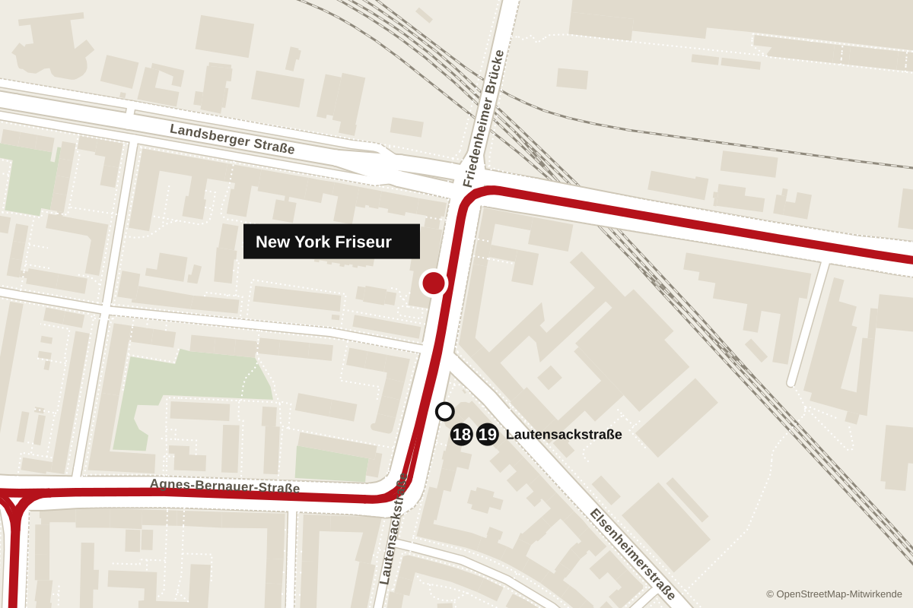

New York Friseur, Herrenfriseur in München-Laim
Herrenfriseur an der Elsenheimerstraße in Laim. Haarschnitt, Fade, Bart und Augenbrauen, sechs Tage die Woche.
Montag bis Freitag 9:30 bis 19:30 Uhr, Samstag 9:30 bis 19 Uhr
Leistungen und Preise
Jeder Schnitt beginnt mit einer kurzen Absprache am Stuhl: wie kurz an den Seiten, wie viel oben, Übergang hart oder weich. Danach Maschine, Schere und Messer für die Kontur.
Termine gibt es telefonisch. Ohne Termin kommst du dran, sobald ein Stuhl frei ist.
Alle Preise in Euro.
- Haarschnitt25
- Maschinenschnitt18
- Fade28
- Bart trimmen und Kontur15
- Haarschnitt mit Bart38
- Rasur mit heißem Tuch22
- Augenbrauen8
- Kinder bis 12 Jahre18
Bewertungen
4,5 von 5 Sternen bei 74 Google-Bewertungen.
Am häufigsten genannt werden saubere Schnitte, die genau so werden wie besprochen, ein freundliches Team, kurze Wartezeiten und faire Preise. Mehrere Stammkunden heben außerdem die Arbeit an Bart und Augenbrauen hervor.
Öffnungszeiten
- Montag
- 9:30 bis 19:30
- Dienstag
- 9:30 bis 19:30
- Mittwoch
- 9:30 bis 19:30
- Donnerstag
- 9:30 bis 19:30
- Freitag
- 9:30 bis 19:30
- Samstag
- 9:30 bis 19:00
- Sonntag
- geschlossen
Anfahrt
New York FriseurElsenheimerstraße 4a
80687 München
- 1819Tram bis Lautensackstraße, von dort rund 100 Meter
- UU4 und U5 bis Westendstraße, etwa 10 Minuten zu Fuß
- SS-Bahnhof Laim, etwa 15 Minuten zu Fuß
